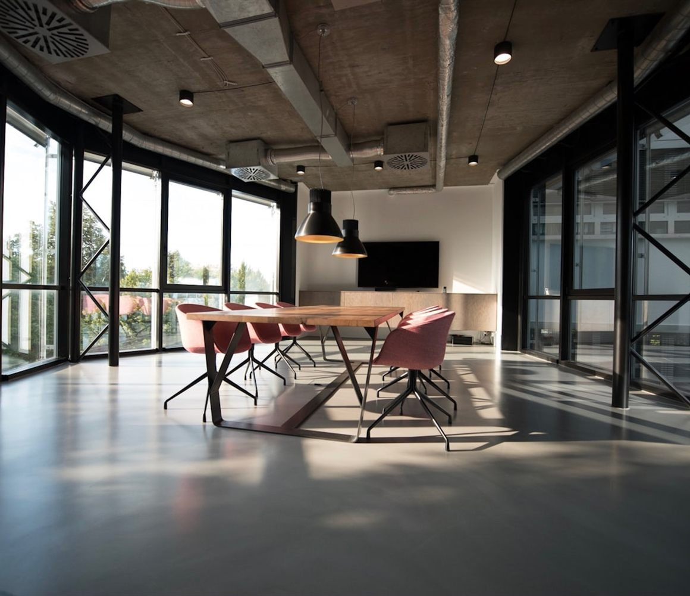
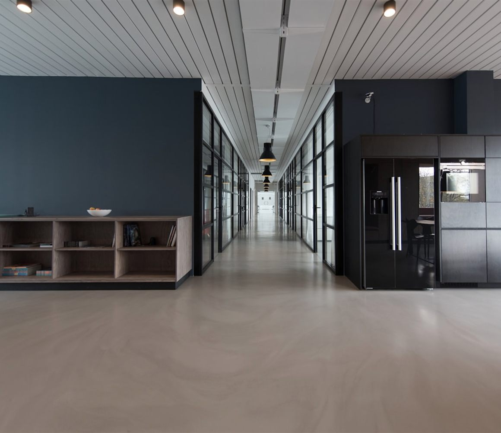
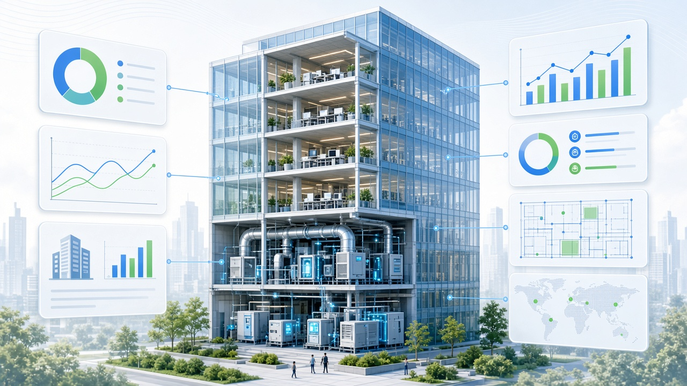
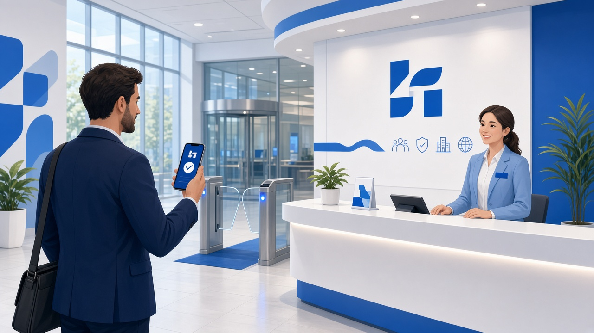
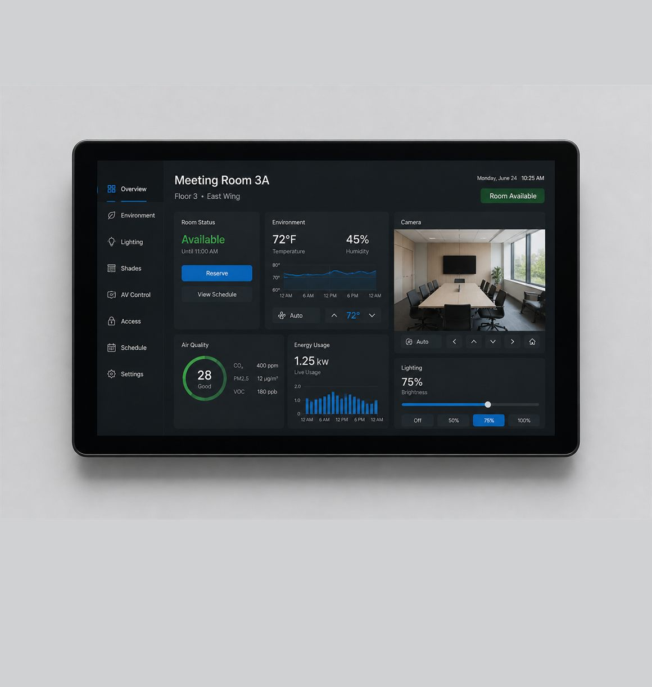

ASPACE SPACE INTELLIGENCE · QUICK START
Aspace 空间智能
快速入门指南
面向企业员工、空间管理员与业务负责人的图文手册。带你从登录门户、找到应用，到完成会议室预约、能耗查看、访客邀约等常用任务。
目录
阅读建议：如果你是第一次使用，请按第 1–5 章走完「认识 → 登录 → 找应用」；然后按你的岗位选择第 6–10 章任一场景实操。遇到问题先查知识库，再联系客服。
图 0-1 推荐入门路径：登录账号 → 浏览应用广场 → 打开业务应用 → 遇到问题查知识库
CHAPTER 01
认识 Aspace 空间智能
Aspace 空间智能开放平台，是安托未来面向园区、楼宇与企业办公空间打造的统一业务入口。它把分散的会议室、设备、能耗、门禁、访客、信息发布等能力，收敛到同一个门户中，让员工「找得到、用得上、问得清」。
图 1-1 平台分层示意：底层设备与空间数据 → 中层能力与应用 → 上层面向不同角色的业务入口
它解决什么问题？
对普通员工
- 快速预约会议室、申请权限
- 发起访客邀约、查看通行结果
- 在一个入口打开常用空间应用
对管理与运营
- 掌握空间使用、能耗与设备状态
- 统一发布公告、画报与电子相册
- 按业务场景编排协同链路
你可以把它理解成
- 门户：登录后看到首页、应用广场、知识库、关于我们。
- 应用市场：按会议、能源、安防、孪生等分类浏览 20+ 空间智能应用。
- 帮助中心：用搜索、分类与文档中心自助学习与排障。
提示：不同园区/企业开通的应用清单可能不同。你在应用广场里看到的，才是当前环境已授权给你的能力。
CHAPTER 02
平台结构与导航
进入 Aspace 空间智能开放平台后，顶部导航通常包含四个主入口：
| 导航 | 做什么 | 适合谁 |
|---|
| 首页 | 了解业务全景、典型场景与平台能力概览，快速跳转到应用。 | 所有用户 |
| 应用广场 | 按分类、搜索、收藏浏览并打开具体业务应用。 | 日常办事的主力入口 |
| 知识库 | 搜索帮助文档、查看精选指南、阅读最新更新。 | 自学与排障 |
| 关于我们 | 了解公司与联系方式，必要时联系客服。 | 商务/咨询 |

图 2-1 空间智能门户强调「一个入口连接多种业务」，而不是让员工记住十几套独立系统地址。
右侧/账号区常见能力
- 登录 / 已登录头像：统一认证登录；登录后可退出。
- 收藏应用：在应用广场把高频应用加入「我的收藏」，下次更快打开。
- 搜索：在应用广场按名称、场景关键词搜索；在知识库按问题关键词搜索。
小技巧：把「会议预约」「能耗」「访客邀约」先收藏。新用户前两周 80% 的操作通常集中在这三类。
CHAPTER 03
登录、账号与权限
3.1 如何登录
- 打开门户：通过企业提供的 Aspace 空间智能入口进入首页。
- 点击「登录」：右上角进入统一认证授权流程（OIDC）。
- 完成企业身份验证：按企业账号体系输入凭证或扫码。
- 返回门户：认证成功后自动回到 Aspace，右上角显示你的姓名/头像。
注意：若登录后仍看不到某些应用，通常不是登录失败，而是应用权限尚未开通。请继续看 3.2。
3.2 申请产品/应用权限
权限决定你能打开哪些应用、能看哪些楼层/会议室/能耗分区。常见路径：
- 在应用广场找到目标应用，若提示无权限，按页面引导发起申请。
- 或在快捷入口中选择「申请产品权限」，填写用途、所属部门、所需空间范围。
- 等待管理员审批；审批通过后刷新页面或重新进入应用。
申请时建议写清
- 业务用途（例：每周例会预约）
- 使用频率与时段
- 涉及楼宇/楼层/会议室
- 是否需要代订、审批、数据导出
常见权限类型
- 应用可见/可打开
- 空间资源可预约范围
- 能耗数据可见分区
- 管理配置（仅管理员）
安全提醒：不要共享个人登录态。代他人预约时，使用系统提供的代订/授权能力，而不是借用账号。
CHAPTER 04
首页与业务全景
首页帮助你快速理解「平台能做什么」，并按业务链路跳转，而不是一上来面对密密麻麻的功能清单。

图 4-1 首页场景卡会把「园区楼宇 / 企业办公 / 生产制造 / 智慧仓储」等典型场景与相关应用绑在一起。
4.1 业务全景在讲什么
业务全景通常按链路展示，例如：
- 协同：会议预约、智能门牌、会议控制
- 资产：资产台账、盘点、借还
- 运维：设备监测、空调控制、能耗分析
- 服务：访客接待、门禁通行、工单巡检
- 洞察：数字孪生、信息发布、电子相框
4.2 建议你怎么用首页
- 先看与自己岗位最接近的场景卡（如行政看「企业办公」，物业看「园区楼宇」）。
- 点场景下挂的应用标签，进入应用广场对应能力。
- 确认能打开后，立即收藏，形成个人工作台习惯。
说明：首页是「导览」，真正办事请进入应用广场。首页配置可能由运营更新，但不影响你已收藏的应用。
CHAPTER 05
应用广场怎么用
应用广场是日常最高频入口。你可以按分类浏览，也可以直接搜索。
5.1 分类浏览
左侧/顶部分类常见包括：数字孪生、会议管理、信息发布、资产管理、能源能耗、双碳管理、门禁安防、智能底座、访客管理等。
5.2 搜索与收藏
- 搜索框支持应用名、场景词，例如：会议预约、能耗、访客、电子相册。
- 打开应用详情/卡片后可加入收藏；在「我的收藏」集中管理。
- 部分应用会跳转到独立业务系统；请允许浏览器弹窗或在企业内网环境打开。
打不开应用时按这个顺序排查：① 是否已登录 ② 是否有权限 ③ 是否企业网络/白名单 ④ 浏览器是否拦截弹窗 ⑤ 查知识库或联系管理员。
CHAPTER 07
场景二：查看能源能耗

图 7-1 能耗应用帮助你从「楼宇总量」下钻到分区、回路或设备，发现异常用能。
7.1 谁需要看能耗
- 物业/能源管理员：日报、月报、同比环比、异常告警
- 行政与部门负责人：了解责任区域用能趋势
- 项目与双碳同事：为核算与减排提供数据入口
7.2 快速上手
- 应用广场打开能源能耗（或首页「设备与能源」链路）。
- 先看总览：今日用电/用水、同比、峰值时段。
- 按楼宇 → 楼层 → 分区筛选；对异常点标记或下钻设备。
- 需要汇报时导出报表，或把关键图表加入收藏视图。
数据延迟说明：采集与网关上传存在分钟级到小时级延迟。若刚完成回路改造，请先确认测点已接入（详见知识库《能源能耗数据接入说明》）。
7.3 和智能控制的关系
能耗看「用了多少」，智能控制（空调、照明、场景）管「怎么用」。发现夜间空房间仍高负载时，可协同空调/照明策略或工单巡检处理。
CHAPTER 08
场景三：访客邀约

图 8-1 完整闭环：员工发起邀约 → 访客确认 → 审批/凭证 → 门岗或闸机核验 → 签到签退
8.1 员工侧：发起邀约
- 打开访客邀约应用，新建邀约。
- 填写访客姓名、手机号、来访目的、到访时段、被访人、通行区域。
- 提交后等待审批（若企业开启审批流）。
- 通过后系统向访客发送确认与动态访客凭证。
8.2 访客侧与门岗核验
- 访客在小程序/短信链接中查看状态，届时出示动态码。
- 自助访客机或前台核验后，可打印访客卡；有门禁的园区可直接联动闸机。
- 核验界面应能看到被访员工、目的、有效时段与授权区域，避免“只扫码不管范围”。
合规提醒：仅邀约真实到访人员；过期凭证勿转发。涉及机房、实验室等敏感区域，务必按最小权限勾选通行范围。
图 8-2 访客能力属于「通行与服务」链路，常与门禁安防、会议室预约一起使用（外部参会人）。
CHAPTER 09
场景四：信息发布与电子相册
AI 画报 / 信息发布
做企业文化、通知与活动视觉，并投放到楼宇屏。
9.1 信息发布建议流程
- 明确投放位置：电梯厅、餐厅、会议室走廊、前台等。
- 在内容应用中选择模板或上传素材，注意品牌与合规审核。
- 选择终端/分组，设置生效时段与下线时间。
- 发布后到现场或远程预览确认；过期自动下线或手动撤销。
9.2 电子相册注意点
- 统一分辨率与方向，避免竖图在横屏上严重裁切。
- 多屏同步时，先确认终端在线与分组正确。
- 涉及人物肖像、客户案例需有授权。
和会议的结合：大型活动可把「日程画报 + 导视 + 电子相册回顾」串成一套发布计划，减少临时改屏成本。
CHAPTER 10
场景五：数字孪生与空间态势

图 10-1 数字孪生把楼宇、设备与运行数据放在同一空间视图中，适合运营调度与领导驾驶舱。
10.1 适合做什么
- 园区/楼宇运行总览：空间占用、关键设备、告警聚合
- 事件定位：从告警跳到对应楼层与设备
- 汇报演示：用三维/空间视图讲清「哪里出了问题、影响多大」
10.2 使用建议
- 先选择正确的园区与楼栋模型，再打开图层（能耗、门禁、会议占用等）。
- 不要一次打开全部图层；按当前任务叠加 1–2 类数据。
- 发现异常后，从孪生跳转到对应业务应用（工单、设备中心、能耗）闭环处理。
性能小贴士：首次加载模型可能较慢。建议企业网络环境下使用；演示前预先打开并缓存关键楼栋。
CHAPTER 11
知识库与自助排障
知识库是门户内的帮助中心，结构一般包括：搜索与热词、文档分类、精选文档、文档列表、最新更新、客服引导。
11.1 怎么高效找文档
- 先用顶部搜索：输入「预约」「权限」「能耗接入」等结果词。
- 点热门搜索词，快速进入高频问题。
- 左侧按分类筛选（能源能耗、会议室预约系统、项目服务等）。
- 精选卡片看「新手必读 / 热门文档」；下方列表浏览普通文档。
11.2 打开文档
文档可能是 PDF / Word。点击后将在新窗口预览或下载。若无法打开，检查是否登录、是否有文件、浏览器是否拦截。
11.3 联系客服
页面底部「客服引导」可留下联系方式。提交前请准备：发生时间、账号、应用名称、截图、已尝试步骤，便于更快定位。
推荐收藏文档：《Aspace 空间智能快速入门指南》（本文）、《会议室预约配置操作指南》、《能源能耗数据接入说明》、《项目实施规范》。
CHAPTER 12
常见问题 FAQ
Q1. 登录成功但应用广场是空的？
可能是企业尚未给该账号分配应用可见权限，或当前环境未发布应用目录。联系空间管理员开通，并确认你进入的是正确园区门户。
Q2. 会议室总是提示冲突？
换相邻时段或邻近房间；检查是否有周期性会议占用；确认是否存在保洁/维护锁定。管理员可在预约后台查看锁定来源。
Q3. 能耗数字和电表不一致？
先核对测点映射与采集周期，排除显示时区/汇总口径差异。改造后需重新校验接入，参考《能源能耗数据接入说明》。
Q4. 访客码核验失败？
检查是否在有效时段、是否已审批通过、手机时间是否准确、是否走错门禁点。过期请重新发送邀约。
Q5. 信息发布了现场没变化？
确认终端在线、分组选对、生效时间已到、素材分辨率适配，并在终端侧执行刷新/重新拉取。
Q6. 可以不登录就用吗？
浏览介绍可以；涉及预约、邀约、能耗、配置等业务操作需要登录并具备相应权限。
APPENDIX A
业务能力一览
| 分类 | 典型能力 | 一句话 |
|---|
| 数字孪生 | 园区/楼宇孪生 | 统一呈现运行态势 |
| 会议管理 | 预约、门牌、会控、投屏 | 覆盖会前到会中 |
| 信息发布 | 信息发布、AI 画报、电子相册 | 内容生产到多终端展示 |
| 资产管理 | 台账、RFID 盘点、借还 | 资产全生命周期 |
| 能源能耗 | 能耗分析、用能异常 | 看清用量与节能空间 |
| 双碳管理 | 碳排核算与分析 | 支撑减排目标管理 |
| 门禁安防 | 通行权限、告警 | 人员与区域安全 |
| 智能底座 | 设备中心、传感、场景、权限中心 | 空间与控制基础能力 |
| 访客管理 | 访客邀约与到访服务 | 邀约到核验闭环 |
实际以你所在环境的应用广场为准；上表用于建立「分类心智模型」，方便搜索与权限申请时描述需求。
图 A-1 能力不是孤立按钮：会议、访客、门禁、能耗、发布往往在同一业务日中被串联使用。